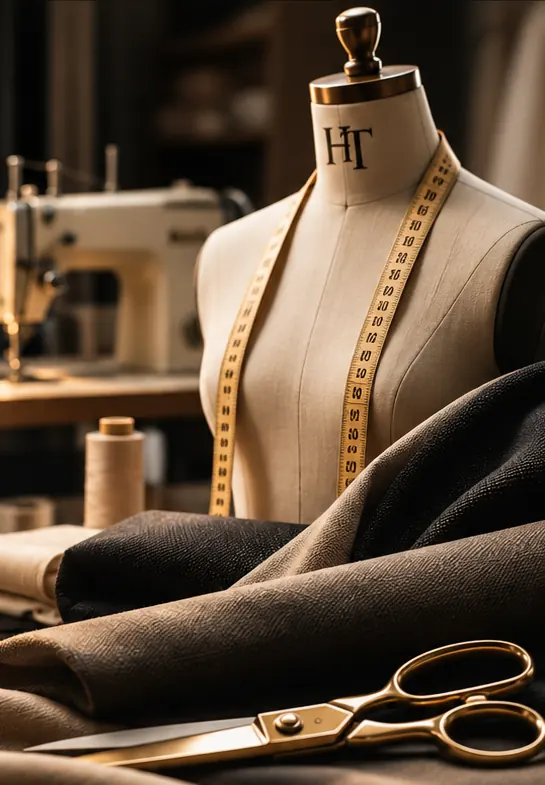

من نحن
إرث من الحرفية ورؤية للمستقبل.
خبرة عملية في الخياطة والتصنيع منذ عام ٢٠١٤.
قصّتنا
قبل الغرزة الأولى.
في HOUSE OF THREAD، تشكّل الحرفية أساس كل ما نصنعه. نجمع بين خبرة عملية في الخياطة والتصنيع تعود إلى عام ٢٠١٤ ورؤية معاصرة للجودة والإبداع والدقّة.
من مجموعات الأزياء والزيّ الموحّد إلى مفروشات الضيافة والرعاية الصحية، نتعاون مع العلامات التجارية والشركات والمؤسسات لتحويل أفكارها إلى منتجات مدروسة.
تبدأ صناعة المنتج بفهم رؤيتك وضبط التفاصيل واختيار الخامات المناسبة وتطوير منتج يلبّي توقّعاتك.
سواء أتيت بتصميم مكتمل أو بفكرة تنتظر أن تتشكّل، يلتقي الإبداع بالحرفية في مشغلنا ونعتني بكل تفصيل.
الخدمات الدوليةتواصل مع المشغل
تواصل معنا